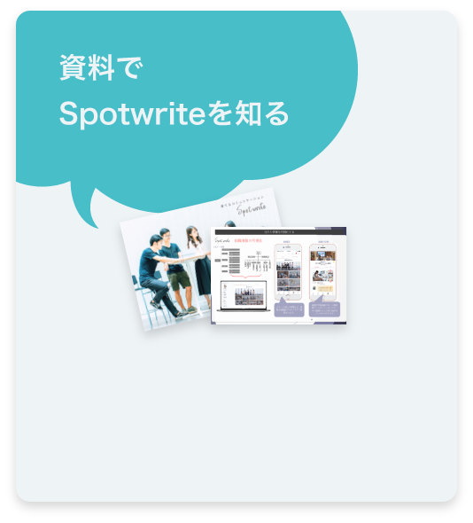

製品紹介

Spotwriteには、社内を活性化させる様々な機能をご用意。
ポジティブな情報を社内に共有することで従業員のエンゲージメントを高め、利用状況を可視化してコミュニケーションを育てることができます。
グループ会社や部署など、複雑な組織図がわかりやすく整理されます。
組織の詳細画面では、仕事風景やリーダーメッセージで、その組織がどんな取り組みをしているかわかります。
興味のあることや経歴など、社員一人一人のプロフィールが閲覧できます。
プロフィールの項目は集計され、みんなの共有データに！
社内連絡はトップページで社員に確実かつスピーディに共有。メンバーが投稿する近況や、部署やコミュニティごとのニュースがタイムラインに集まります。
社内連絡には華やかなテンプレートを複数用意。サンクスメッセージや社員座談会、インタビュー、MVPなど多様な企画を楽しく見せます。
管理画面で選んだテーマを、ユーザーへ自動で提示。記事を書きやすくする工夫で、普段発言が少ない人のエピソード投稿もシステムがサポートします！
部活や同好会、職場仲間のグループを作れるコミュニティ機能。
活動報告で皆に共有したり、コミュニティの概要を公開できます。
日時や詳細、場所も地図付きでわかりやすく投稿。招待したメンバーは参加可否を選択できます。
年間のイベント予定は一覧で表示され、終了したイベントも確認できます。
自分のお気に入りの記事や部署を管理したり、プロフィールを編集できるマイページ。
イベントの招待やSpotwriteの活用状況も把握することができます。
Spotwriteの利用状況を一覧で可視化。
「この部署ではコメントの利用が活発に行われている」「この会社ではまだ導入が進んでいない」などの状況を一目で把握できます。
モチベーションチェックは、従業員のその日の調子を収集する機能。5つの選択肢からその日の気分に１番近いものを選びます。毎日チェックすることで、調子の振れ幅を観測します。
リアルタイムなメッセージ機能は、会社のメンバーが全て登録されているので誰とでもすぐにやりとりが出来ます。ファイルや画像も楽々共有。 業務用チャットツールとしても。
外国語で投稿された社内連絡や記事でも、ユーザーそれぞれが指定した言語に自動翻訳されます。
メッセージ画面では、複数の言語を同時翻訳。国籍関係なく交流を深めることができます。
社内のマニュアルや申請フォーマットなど、共有したいファイルをアップロードして各デバイスにダウンロードできます。
社員全員の在籍状況が分かる一覧。
ステータスは企業ごとに自由に設定できるので、テレワークやリモートワークにも柔軟に対応！